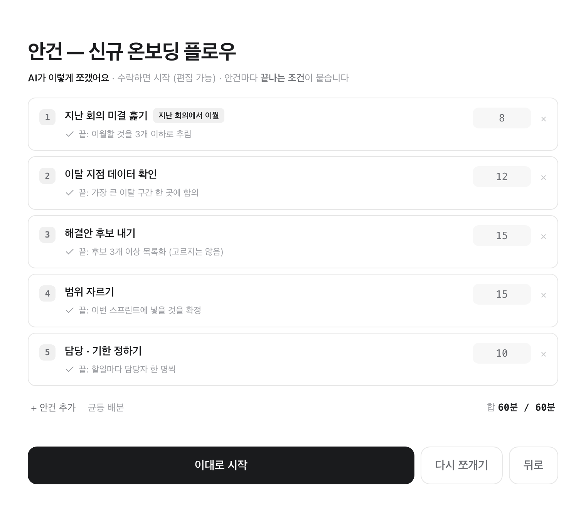
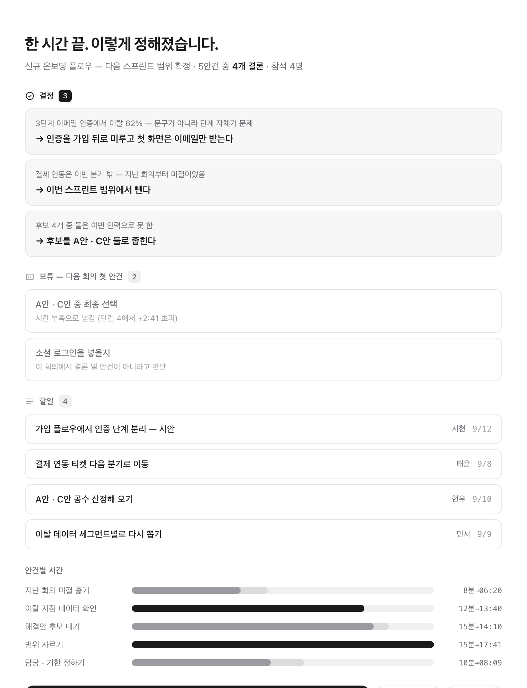

녹음하지 않습니다
마이크를 켜지 않고 전사도 하지 않습니다. 참석자 동의를 받을 일이 없고, 오디오 비용도 생기지 않습니다.
사회자가 없는 자리에 사회자를 놓습니다. 바짝은 안건마다 무엇이 나와야 끝나는지를 화면에 적어두고, 한 시간이 지나면 붙여넣을 수 있는 회의록을 내놓습니다.

진행 중 · 왼쪽은 압력, 오른쪽은 산출. 오른쪽에 쌓인 것이 그대로 회의록이 됩니다.
한 모임 · 한 시간 = 한 세션. 설정할 것도 연결할 것도 없습니다. 지난 회의록을 붙여넣으면 그때 못 끝낸 것이 오늘의 첫 안건으로 올라옵니다.
목적 한 줄과 시간을 고릅니다. 지난 회의록은 선택입니다.

제안이 오면 고치거나 다시 쪼갭니다. 합은 항상 총 시간과 맞습니다.

정해진 것을 한 줄씩 담습니다. 결정 · 보류 · 할일로 갈립니다.
타이머는 시간이 다 되면 끝났다고 말합니다. 회의는 그렇지 않습니다. 그래서 안건마다 끝나는 조건이 붙고, 조건이 빈 안건이 하나라도 있으면 시작 버튼이 잠깁니다.
“이 안건은 후보 3개 이상 목록화되면 끝납니다”
끝났는지 판정할 수 없는 말은 조건이 될 수 없습니다. 눈에 보이는 산출물이어야 합니다.
바짝에는 색이 없습니다. 빨강도 초록도 쓰지 않습니다. 대신 시간을 넘긴 순간 왼쪽 절반이 통째로 반전됩니다. 소리치는 것은 시간이지 결정이 아니라서, 오른쪽에 쌓인 것은 그대로 둡니다.

+02:41 · 지금 정하고 넘어갈지, 5분을 더 쓸지, 보류함으로 넘길지 그 자리에서 고릅니다.
화면 공유에 얹는 별도 창이 있습니다. 남은 시간과 끝나는 조건만 크게 띄우고, 조작은 진행자 화면에서만 일어납니다. 진행자는 ⌘⇧→ 하나로 다음 안건으로 넘깁니다.

공유 화면 · 항상 위에 뜨지 않습니다. 공유 대상으로 골라야 하는 창이라 앞을 가리면 방해가 됩니다.
회의 중에 담은 것이 곧 회의록입니다. 복사 한 번이면 마크다운이 클립보드로 갑니다 — 슬랙이나 노션에 그대로 붙습니다. 못 끝낸 것은 보류함에 남았다가 다음 회의의 첫 안건으로 올라옵니다.

결정에는 상황이 함께 남습니다 · 결론만 적으면 한 달 뒤에 왜 그렇게 정했는지 아무도 기억하지 못합니다.
회의는 조직에서 가장 민감한 자리 중 하나입니다. 그래서 나가는 길을 아예 만들지 않았습니다.
마이크를 켜지 않고 전사도 하지 않습니다. 참석자 동의를 받을 일이 없고, 오디오 비용도 생기지 않습니다.
회의는 진행자 기기에서 돌고 기록은 그 기기의 파일 한 장에 남습니다. 로그인할 곳이 없습니다.
안건 쪼개기에 AI 를 쓸 수 있지만 기본값은 끄기입니다. 꺼두면 한 글자도 기기 밖으로 나가지 않고, 균등 배분으로 그대로 돌아갑니다.
켜더라도 내 기기의 claude CLI 나 내 API 키를 씁니다. 우리 서버를 경유하지 않습니다.